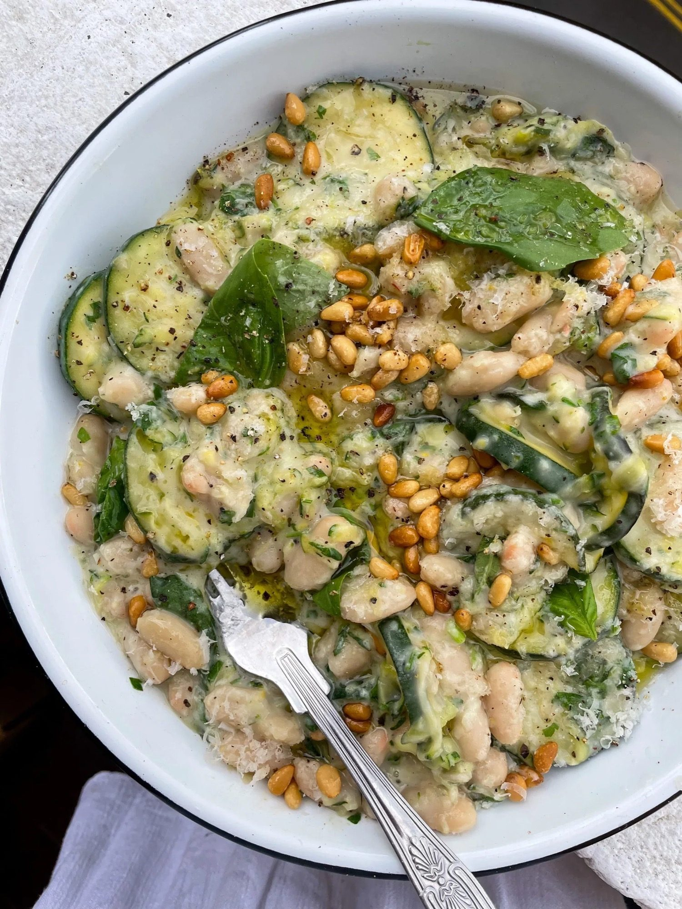

Creamy Courgette Beanotto
White beans cooked risotto-style with courgette, lemon, crème fraîche and Parmesan.

Ingredients
Method
- Squeeze as much liquid as you can out of the 1 grated courgette.
- Toast the handful of pine nuts in a dry pan for 2-3 minutes until golden, then set aside.
- Heat the 2 tbsp olive oil in a large pan over a medium heat.
- Add the 1 sliced courgette with a pinch of salt and cook for 7-8 minutes, stirring occasionally, until starting to brown.
- Add the grated courgette and the 2 garlic cloves and cook for a further 2-3 minutes, until the courgette softens.
- Grate in the zest of ½ lemon.
- Pour in the 570g jar of white beans with their liquid.
- Fill the empty jar a quarter full with water, swirl it around and add that to the pan too — it acts as a stock. Stir to combine.
- Season well with cracked black pepper, tasting before you add any salt as the beans are already well seasoned.
- Reduce the heat to low and stir in the 1 heaped tbsp crème fraîche and the 45g Parmesan, working fairly quickly so the crème fraîche does not split.
- Stir in the 15g parsley and tear in most of the basil, saving a few to garnish.
- Add the juice of ½ lemon and check the seasoning.
- Spoon into bowls and grate over extra lemon zest and extra Parmesan.
- Scatter over the toasted pine nuts and the remaining basil, and finish with a drizzle of olive oil.
Notes
- Something crunchy on top makes a real difference — pine nuts, toasted seeds or breadcrumbs all work.
- Make it vegan: use a plant-based crème fraîche and a vegan alternative to the Parmesan.
- The source calls for one jar of white beans and links both a 570g and a 660g jar; either size works.
- See also Miso Mushroom Beanotto for the colder-weather version.
Source: https://boldbeanco.com/blogs/beanspo-recipes/creamy-courgette-bean-otto